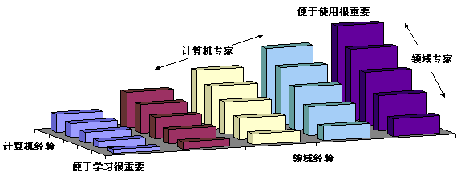
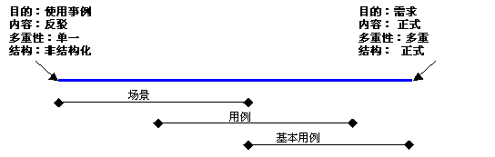

| 概念：以用户为中心的设计 |
 |
|
什么是以用户为中心的设计？对于什么是以用户为中心的设计的问题没有一致的确切定义。但是，John Gould 和他在 IBM 的同事在 1980 年开发了一个名为可用性设计 [GOU88] 的方法，该方法包括了最普遍接受的定义。它是从许多迭代系统的实践经验中发展而来的，最著名的就是 IBM 的 1984 年奥林匹克消息传递系统 [GOU87]。如下所述，该方法有四个主要组成部分。 以用户为中心Gould 建议，开发人员应该确定谁将是该系统的用户，并应该尽可能早地让他们参与进来。他建议了许多方法来熟悉用户、用户的任务以及需求：
在 Rational Unified Process（RUP）中， 在几个关键阶段都要用到专题研讨会，但是专题研讨会必须由 Gould 描述的各种活动来补充才能形成确切的认识。（这种看法背后的部分原因是因为人们通常描述自己的操作往往与实际的操作方法有很大不同。他们常常遗忘或省略一些例行任务或表面上无足轻重的细节，诸如工作布局或令人费解的纸片等，因为这些并非“正式”属于当前流程的一部分。） 与设计集成可用性任务应该在开发早期并行执行。这些任务包括形成用户界面、用户指南或联机帮助的草稿。Gould 还指出，可用性应该是整个小组的职责。 集成设计的一个重要特征是：详细用户界面设计的整体方法（即框架）要在初期进行开发和测试。 这是以用户为中心的设计和其他单纯的递增技巧之间存在的重要差异。它确保此后各阶段中进行的递增式设计能够天衣无缝地适合框架，而且用户界面在外观、术语和概念上都能保持一致。 在 RUP 内，该框架可以用领域模型来建立，以确保用户界面中要出现的所有术语和概念一般能让该行业的人士了解并理解，并且特别要让用户了解并理解。（领域模型中还有些部分只与特定的用户群体有关。 应该注意确保领域模型的组织方式能使这些部分很容易识别。）随着用户界面设计的进行，许多领域类将表示为用户界面元素。用户界面元素以及它们之间的关系应该与领域模型保持一致，并且应该在设计中的系统的各个部分得到一致的表示。（这不仅对用户有所帮助，而且对用户界面组件的复用有所改进。） 早期的用户测试早期的用户测试意味着早期的演示图板和早期的低精确度原型的开发。高精确度原型将在流程的较晚时期出现。 故事板可以与用例结合使用，来为设计中的系统撰写具体的使用场景。 它们可以采取以下形式：陈述、图示陈述（将用户界面模型用于图示）、故事板、走查（和用户一起）以及以用户为中心的小组，可能许多软件开发人员都不熟悉这些方法。但是，使用这些方法显然比在实施进行过程中发现设计不恰当或需求被误解更加成本有效。 迭代设计面向对象的开发已经变成了迭代流程的同义词。迭代设计非常适用于需要改进了解以及需求不断变化的问题。毫不奇怪，迭代设计是以用户为中心的设计的关键组成部分。这里有一部分原因是因为用户的需要随着时间的推进而改变，但也是因为生成能够处理不同需要的设计解决方案的内在复杂性。 请注意，在以用户为中心的方法中，迭代设计是在集成的框架内发生的。我们有意避免超出达成一致的框架的递增开发，因为这种方法可能会带来“修补式的”解决方案。 为什么使用以用户为中心的设计？满足用户需要交互式系统依赖于它们能够满足用户需要的能力来获得成功。这意味着不仅要识别不同的用户团体，还要识别个别用户的技能、经验和喜好的范围。 虽然开发人员和管理员很可能认为他们了解用户需要，但在实际操作中却很少是这样的。他们往往会关注用户应该如何执行任务，而不是他们喜欢如何执行任务。在很多情况下，喜好的问题不仅仅是感觉拥有控制的问题，虽然这是它本身的一个重要方面。喜好同时由经验、能力和使用环境决定。这些问题被认为对设计流程足够重要，以至已有必要制定一个国际标准（[ISO 13407]，名为交互式系统的以人为中心的设计流程）。 该标准和相关的问题将在本页的余下部分作一般讨论。 用户界面设计用户通过系统的用户界面了解系统并与系统交互。界面中出现的概念、图像和术语必须适合用户的需要。例如，供客户买票的系统与卖票人员专门使用的系统会有很大区别。主要区别不是需求，甚至不是详细的用例，而是用户的属性以及系统操作环境的属性。 用户界面还必须至少考虑两个方面的经验（经验的范围可能很广泛），即计算机经验和领域经验，如下面的图 1 所示。计算机经验不仅包括对计算机的一般熟悉，还包括对开发中的系统的经验。对计算机或问题域几乎没有什么经验的用户（在图的左角）所要求的用户界面的方法与专家用户（右角所示）的要求有很大不同。  图 1：计算机和领域经验对便于学习和便于使用的影响 请注意，缺乏经验的用户随着时间的推移会变成专家这种结论并不是一定能得出的。许多因素会阻碍这种情况的发生，如低使用频率、低激励或高复杂性。相反，有些系统则主要是专家用户。这里的因素可能是培训、高使用频率或高激励（工作依赖关系）。这些问题中的一部分以及它们对用户界面设计的影响见表 1。
表 1，一些影响用户界面设计的因素 交互式系统必须设计成迎合适当范围的用户经验和具体情况，或者必须采取步骤限制设计领域。例如，可以使用培训来降低复杂系统中对便于学习的需求。或者可以降低系统的范围，以使其更好地满足用户的核心需求（这是 Alan Cooper 在他的 The Inmates Are Running the Asylum [COO99] 一书中提出的建议）。 法规和标准作为以用户为中心的设计的一部分，我们需要考虑用户的技能和身体属性。这些问题现在正越来越多地体现在法规中。这主要是为了照顾有残疾的用户。 但是，让系统可以为更大范围的用户使用，这通常可以视为使整个用户团体受益。 下表列出了全球许多地方的相关法规和资源：
表 2a，残疾相关的法规（按国家、地区或团体） 除了法规，以用户为中心的设计和用户界面设计正渐渐变成标准化的主题，如下所示。
表 2b，ANSI 和 ISO 用户界面和以用户为中心的设计标准 RUP 中以用户为中心的设计开发适合用户需要的系统意味着需求分析中的一个重要工作。在以用户为中心的设计中，该工作以最终用户为中心。 业务建模规程覆盖了业务工作者（业务内部的人员）和业务参与者（业务外部的人员）的建模。 以用户为中心的设计着重强调的问题是：我们要了解充当上述工作产品中所描述角色的实际人群的需要。 特别是我们必须避免设想用户（对这样的用户，软件系统是很容易设计的）。描述用户的工作产品必须在与用户有真正的、第一手的联系后才能撰写。在以用户为中心的设计中，这样的第一手联系是流程的一部分，有时称为环境查询。Hugh Beyer 和 Karen Holtzblatt（在他们的 Contextual Design，[BEY98] 一书中）将环境查询的前提描述为： “……到客户工作的地方，观察客户的工作，并与客户谈论工作。” （以用户为中心中已经列出了这样的一些具体示例。）这种方法不仅用于更好地了解系统需求，而且可以更好地了解用户自己、他们的任务和环境。每个人都有自己的属性，所有属性总起来就称为使用环境。 它们在下面关于“以用户为中心的设计”的 ISO 标准中有详细描述。 使用的环境ISO 的交互式系统以人为中心的设计流程 [ISO13407] 将设计的第一步指定为了解和确定使用环境。建议的属性是：
表 3：以用户为中心的设计的 ISO 标准的使用环境 将用户环境分成两个组成部分（用户类型和角色），然后再考虑所有四个环境间的关系，这样很有用。
图 2：环境之间的关系 图 2 显示一个环境中的每个任务是一个用户扮演的角色执行的。如表 4 所示，这些环境与 RUP 工作产品相对应。
表 4，ISO 以用户为中心的设计标准环境及其 RUP 工作产品 这些环境中的每一个都可能对设计适当的用户界面有重要的影响。结果，我们可能面对大量的排列组合。即使是小型系统，也可能有 2 个环境（例如办公地点和客户地点）、3 类用户（销售新手、销售专家和管理层）和 6 个角色（电话销售助手、外部销售代表，等等）。这就意味着每个任务有多达 36 种可能的变体，虽然实际的组合集通常要小得多。 很明显，任务必须逐个描述，但是一个描述是不太可能适合所有的排列组合的。有一个方法是将用户和环境因素归入角色描述中。这是 Constantine 和 Lockwood [CON99] 采用的解决方案。它包括为角色、用户和环境的每个重要组合提供独立的“用户角色”，然后用描述性短语（而不是简单名词）为得到的用户角色命名。例如，将角色“客户”与用户角色“临时客户”、“Web 客户”、“常规客户”和“高级客户”作比较。 每个用户角色描述包括角色本身加上其用户（称为内在角色）和环境的详细信息。这一方法可以通过选择与用户角色相对应的参与者在 RUP 中使用。 场景、用例和基本用例场景、用例和基本用例这些术语有重叠的地方，容易造成混淆；它们在不同的设计方法中使用时，意思稍有出入。例如，在 RUP 中，“场景”的意思是用例实例；它只是通过可能的基本流程和备选流的特定“路径”。但是，您经常会发现以用户为中心的设计方法和用户界面设计方法将场景描述为使用事例，包含的详细信息比简单的事件流多得多。虽然这些附加的信息在后来的设计阶段可能不相关，但它们确实成了对用户、任务和环境的了解的一部分。因此，场景可以在业务建模规程中（在演示图板和角色扮演中）广泛应用，但是在需求规程中，重点则转移到用例上。 从图 3 可以看出这种重叠的本质。顶部的天平包括一些倾向于一起改变的不同的因素。例如，当目的向需求移动时，结构通常会变得更加正式。基本用例出现在一般用例的右边，因为用户角色使它们比一般用例更具体一点（请参阅前面的部分），而且它们的结构更加正式。  图 3：场景和用例在以用户为中心的设计中的概念重叠 系统用例和基本用例间的区别用示例能得到最好的说明。表 5 显示了来自 Constantine 和 Lockwood 的 Software for Use [CON99] 中的用例：
表 5：从 ATM 取现金的一般用例 该示例详细描述了参与者和系统之间的事件顺序，两列之间的垂直线代表用户界面。请注意，虽然 Constantine 和 Lockwood 将该样式当作基本用例推荐，但实际上这个特定用例不是基本用例。原因是它是建立在交互的组合细节这个基础上的。也就是，交互是如何发生的。基本用例主要讲交互是什么（称为语义）。表 6 是交互的基本版本。
表 6：从 ATM 机取现金的基本用例 该用例捕获了取现金交互的本质。“用户操作”和“系统响应”两个标题换成了“用户意图”和“系统职责”来反映重点的改变。好的界面设计以用户目标和意图为中心；这些在传统的用例中通常是隐藏的。在以下情形中，基本用例将特别有用：
但是，基本用例确实也有自己的缺点。像表 5 中这样完全直接了当的用例很可能在讨论其本质问题时带来很大争议。例如，插入卡识别的是客户还是帐户？在大多数现有的 ATM 中，插卡识别的是后者，但 Constantine 和 Lockwood 却认为识别的是客户。他们这么做可能是经过深思熟虑的，因为现在有一些更新的技术可以识别客户，如视网膜扫描和指纹识别；但也可能是一个疏忽。这种情况的结果就是有多个帐户的客户还必须多作出一个选择。 基本用例还带来一个困难，就是它们不适合与用户和其他项目干系人一起复审，因为它们的本质很抽象。这个问题有一部分是因为必须将基本用例转变回到代表用户操作的具体形式。这可以在提供了设计模型时完成：用具体的术语撰写描述交互的场景（在概念上与用例实现相似，但主要强调用户－系统交互，而不是内部对象协作）。 总的来讲，在下列情况下最好不要构建基本用例：
RUP 中的基本用例RUP 并未明确地引用基本用例，但在任务：设计用户界面中，以基本用例为出发点，随可用性需求的不断发展和扩充，从而创建故事板，如指南：故事板所述。 这就意味着删除所有设计或当前实施细节，以便只剩下语义（交互的含义）。然后，随着对各种设计备选方案的探索，组成细节（交互如何发生）作为一类实现添加到基本用例中。（实际上，每个备选设计都是同一个基本用例的一个实现。）
然后，故事板就可以用作任务：建立用户界面的原型的输入来开发用户界面原型。 |
© Copyright IBM Corp. 1987, 2006. All Rights Reserved. |